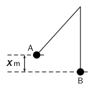

| Motion in One Dimension | ~ | Up | ~ | Transverse Pulses |
| Force | |
| Weight | |
| Acceleration Due to Gravity | |
| Energy | |
| Exercises |
| $F = ma \Rightarrow kg \cdot m \cdot s^{-2} = N$ |
| $Weight = F_g = mg \Rightarrow kg \cdot m \cdot s^{-2} = N$ |
Therefore 1 kg exerts a gravitational force, this is it has a weigth, of 9.8 $N$ on the surface of the Earth.
A mass has different weight in different planets, since these have different gravitational forces.
| Planet |
Gravitational Acceleration (multiples of $g$ on Earth) |
| Mercury | 0.376 |
| Venus | 0.903 |
| Earth | 1 |
| Mars | 0.38 |
| Jupiter | 2.34 |
| Saturn | 1.16 |
| Uranus | 1.15 |
| Neptune | 1.19 |
| Pluto | 0.066 |
| $s$ | $m$ |
| 1 | 4,9 |
| 2 | 19,6 |
| 3 | 44,1 |
| 4 | 78,4 |
| 5 | 122,5 |
| 6 | 176,4 |
| 7 | 240,1 |
| 8 | 313,6 |
| 9 | 396,9 |
| 10 | 490,0 |
It is the result of applying a force to an object along a distance:
$KE = F\Delta x = ma\Delta x$
We know that $v^2_f = v^2_i + 2a\Delta x$. If we suppose that the object is
resting then:
$v^2 = 2a\Delta x \Rightarrow a\Delta x = \dfrac{1}{2}v^2$
In conclusion:
| $KE = \dfrac{1}{2}mv^2 \Rightarrow N \cdot m = J$ |
When we pull an object in the opposite direction of a force field (e.g. gravity), we need to use a contra-force for drawning it a distance. Then if we release the object of our contra-force the object fall down toward the centre of the force field.
Before releasing the object its kinetic energy is 0, because is velocity is 0; but we have exert a force against the field along a distance ($F\Delta x$). As result we say that the object has a potential energy
| $PE = F\Delta x = ma\Delta x \Rightarrow N \cdot m = J$ |
| $U = PE + KE = ma\Delta x + \dfrac{1}{2}mc^2$ |
The total amount of mechanical energy in a closed system remains constant.
Exercise 3
Exercise 4
Exercise 5
Exercise 1
Exercise 2
Exercise 3
Exercise 4
Exercise 5
A ball is dropped from the balcony of a tall building. The balcony is !!x! $m$ above the ground. Assuming gravitational acceleration is 9,8 $m \cdot s^{-2}$, find:
Data:
$\Delta x =$ !!x! $m$
$a = g =$ 9,8 $m \cdot s^{-2}$ downward.
Calculus of time:
As $v_i =$ 0 $m \cdot s^{-1}$ then
$v_f = v_i + at \rightarrow v_f = at \rightarrow v^2_f = a^2t^2$
$v^2_f = v^2_i + 2a\Delta x = 2a\Delta x$
$a^2t^2 = 2a\Delta x$
$t^2 = \dfrac{2\Delta x}{a} \rightarrow$
$t = \sqrt{\dfrac{2\Delta x}{a}} = $ !!t! $s$
Calculus of velocity:
In our case ($v_i =$ 0):
$v_f = at = $ !!v! $m \cdot s^{-1}$ downward.
A stone is dropped from a window. It takes the stone !!t! seconds to reach the ground. How high above the ground is the window?
####
Data:
$t =$ !!t! $s$
$a = g =$ 9,8 $m \cdot s^{-2}$ downward.
During a flood a tree trunck of mass !!m! $kg$ falls down a waterfall. The waterfall is !!x! $m$ high. If air resistance is ignored, calculate:
Data:
$m =$ !!m! $kg$
$\Delta x=$ !!x! $m$
PE:
$a = g =$ 9.8 $m \cdot s^{-2}$
$PE = ma\Delta x$ = !!pe! $J$
KE:
$U = PE =$ !!pe! $J$ at the top.
$KE = U =$ !!pe! $J$ at the bottom.
v:
$KE = \dfrac{1}{2}mv^2 \Rightarrow
v = \sqrt{\dfrac{2KE}{m}} =$ !!v! $m \cdot s^{-1}$ downward.
or
$v = \sqrt{2a\Delta x} =$ !!v2! $m \cdot s^{-1}$ downward.

A !!mass! $kg$ metal ball is suspended from a rope. If it is released from point A and swings down to the point B (the bottom of its arc), being is height difference X = !!x! $m$:
Data:
$m = $ !!mass! $kg$
$x = $ !!x! $m$
Question 1:
$U = KE + PE$
For the ball at point A we have: $U = 0 + mg\Delta x$
For the ball al point B we have: $U = \dfrac{1}{2}mv^2 + 0$
Then by the conservation of energy:
$mg\Delta x = \dfrac{1}{2}mv^2 \Rightarrow
g\Delta x = \dfrac{1}{2}v^2$ and
$v = \sqrt{2g\Delta x}$
Therefore $v$ does not dependent of the mass.
Question 2:
$v = \sqrt{2g\Delta x} =$ !!v! $m \cdot s^{-1}$
A bullet, mass !!m! g, is shot vertically up in the air with a muzzle velocity of !!v! $m \cdot s^{−1}$ . Use the Principle of Conservation of Mechanical Energy to determine the height that the bullet will reach. Ignore air friction.
####
Data:
$m = $ !!m! $kg$
$v = $ !!v! $m \cdot s^{−1}$
$x = $ ? $m$
Question 1:
$U = KE + PE$
For the bullet at the moment of shooting we have:
$U = \dfrac{1}{2}mv^2 + 0$
For the bullet at maximum height we have: $U = 0 + mg\Delta x$
Then by the conservation of energy:
$mg\Delta x = \dfrac{1}{2}mv^2 \Rightarrow
g\Delta x = \dfrac{1}{2}v^2$ and
$\Delta x = = \dfrac{1}{2g}v^2 =$ !!x! $m$